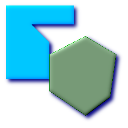
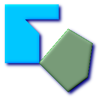
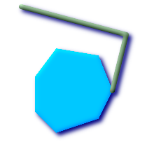
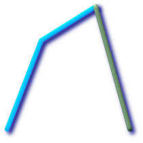
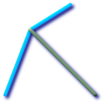
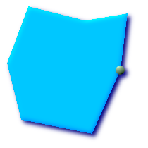

名前
ST_Touches — ジオメトリが共通のポイントを少なくとも1つ持ち、内部でインタセクトしない場合に、TRUEを返します。
概要
boolean ST_Touches(geometry
g1, geometry
g2);
説明
g1とg2の共通部分のポイントがg1とg2の境界の結合上にある場合は、TRUEを返します。ST_Touchesは、面/面, 線/線, 線/面, 点/面, 点/線の全てを受け付けますが、点/点は受け付けません。
数学用語で言うと、この述語は次のように表現されます。

2つのジオメトリに対して許されるDE-9IMは次のようになります。
FT*******
F**T*****
F***T****
![[重要]](images/important.png) | |
|
![[注記]](images/note.png) | |
この関数の呼び出しによって、ジオメトリで使用可能なインデクスを使用したバウンディングボックスの比較が自動的に行われます。インデクスの使用を避けるには |
 このメソッドはOpenGIS Simple Features
Implementation Specification for SQL 1.1.の実装です s2.1.1.2 // s2.1.13.3
このメソッドはOpenGIS Simple Features
Implementation Specification for SQL 1.1.の実装です s2.1.1.2 // s2.1.13.3
このメソッドはSQL/MM仕様の実装です。 SQL-MM 3: 5.1.28
例
次に示す図全てで、ST_TouchesはTRUEを返します。

| 
| 
|

| 
| 
|
SELECT ST_Touches('LINESTRING(0 0, 1 1, 0 2)'::geometry, 'POINT(1 1)'::geometry);
st_touches
------------
f
(1 row)
SELECT ST_Touches('LINESTRING(0 0, 1 1, 0 2)'::geometry, 'POINT(0 2)'::geometry);
st_touches
------------
t
(1 row)